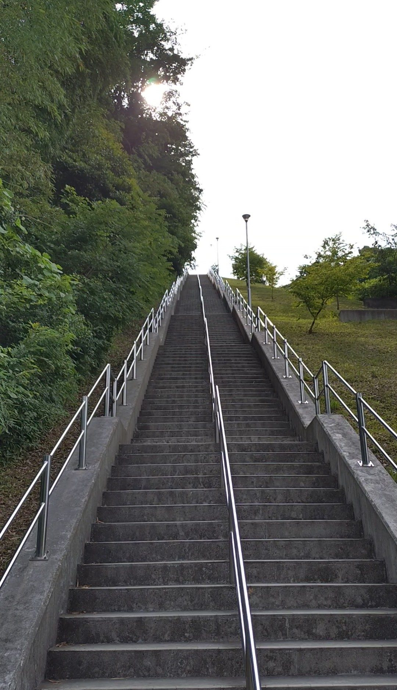
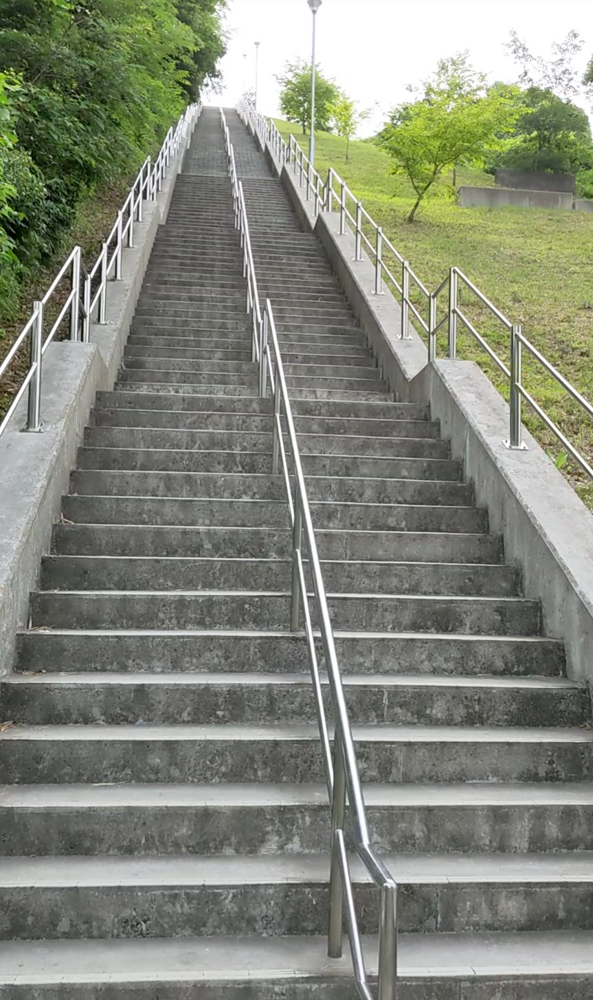
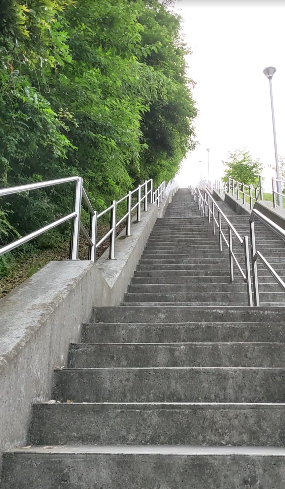
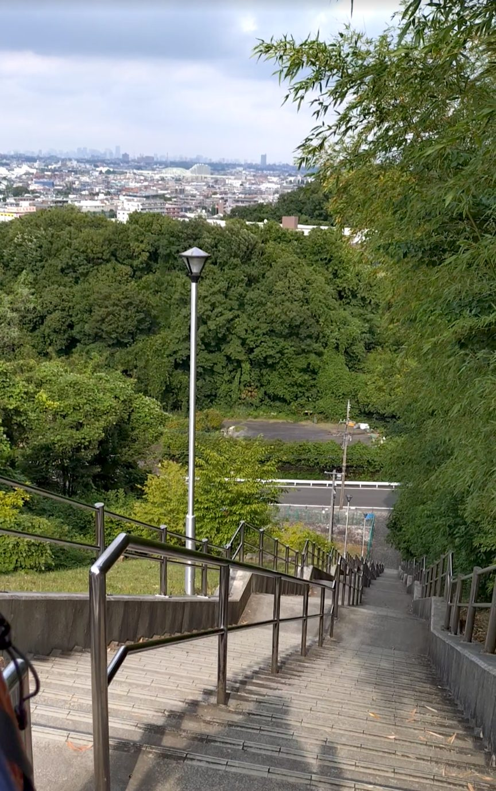
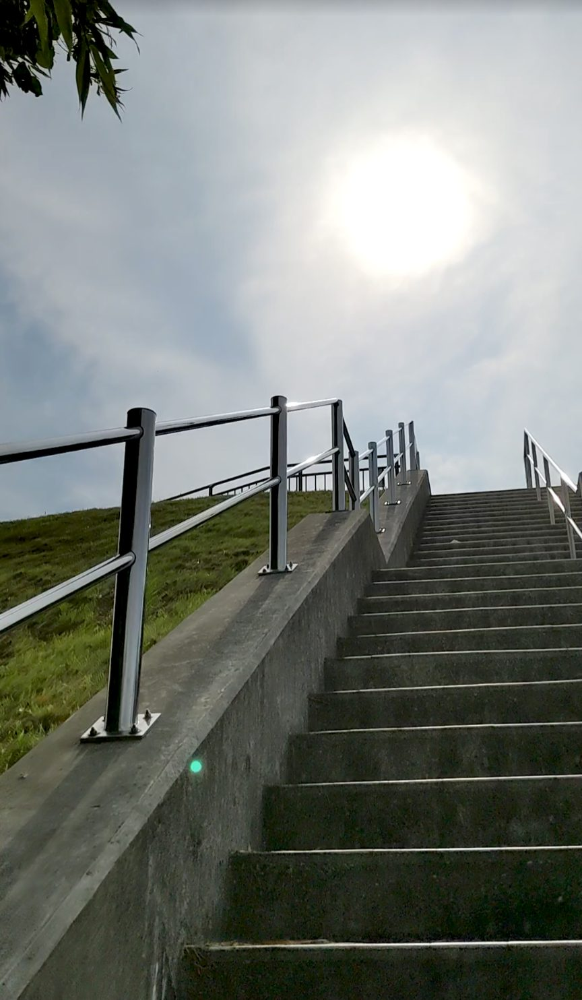
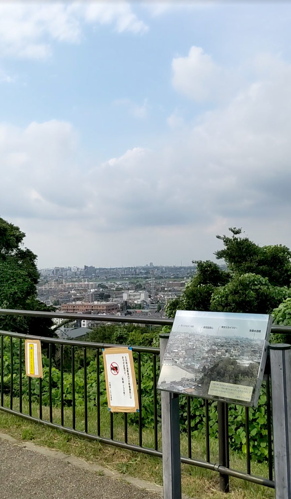

神奈川県川崎市多摩区にある生田配水池展望広場へ続く石段は、218段の超直線的な人工階段です。小田急小田原線の生田駅から徒歩約15分。この石段の最大の特徴は、カーブも方向転換もなく一直線に頂上まで続くこと。入口に立った瞬間に全貌が見え、その段数の多さに思わず圧倒されます。
小田急小田原線「生田駅」下車、徒歩約15分。生田配水池を目指して住宅街を進むと石段が現れます。
段差が高めで急勾配が続きます。踊り場がないため、グリップのある靴と水分補給は必須です。体力に自信のない方はゆっくりと自分のペースで登りましょう。下りも勾配がきついので特に注意して。
石段の入口に立つと、その全貌が一目で視界に入ってきます。一直線に頂上まで続く218段。カーブもなく、隠れた部分もなく、これから登るべきすべてが目の前に並んでいます。段数の多さと直線の圧迫感で、登り始める前から「これはハードだぞ」という覚悟が決まります。

覚悟を決めて登り始めます。すぐに気づくのが、一段一段の高さです。段差が高く、普通の階段より足を上げないといけません。序盤からじわじわと太ももに効いてくる感じがあります。これは確かにハードです。

直線的な石段ならではの特徴として、登っている間、常に頂上が視界に入り続けます。ただ、まだ序盤〜中盤では頂上がはるか先に見えてしまって、「まだあんなに遠い」という気持ちになります。これがこの石段の精神的なきつさのひとつかもしれません。

だいぶ登ってきたところで振り返ります。一直線に下まで続く石段の直線具合が、ここで改めて印象的に目に映ります。曲がり道のない石段を登ってきたのだということが、振り返ることで初めて実感できます。

木々が両脇からなくなってきたあたりで、頂上が近いことを感じます。空が広く開けて、太陽がくっきりと見えてきます。「あともう少しだ」という気持ちがはっきりわかって、自然とペースが上がります。

218段を登り切ると、生田の町が一望できる展望広場が広がります。住宅街の屋根が遠くまで続いていて、かなり高い場所に来たことがよくわかります。あの入口から一直線にここまで登ってきたのかという達成感は、カーブのある石段とはまた違うすがすがしさがありました。
